Travels
A lifelong passion — visited dozens of countries across every continent. Below are a few highlights; the full gallery covers years from 1986.
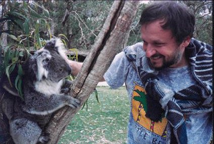
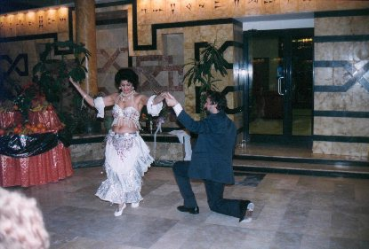
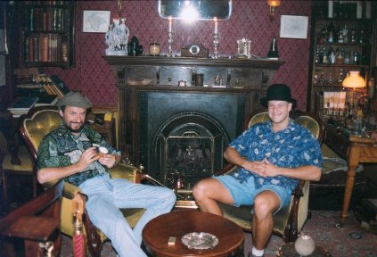
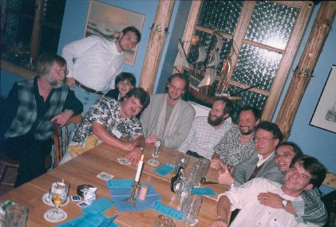


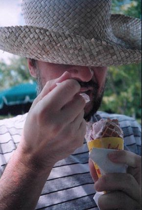
Emeritus Professor · Evolutionary Computation Pioneer
School of Computer Science, Adelaide University
Adelaide, SA 5005, Australia
zbigniew.michalewicz@adelaide.edu.au
Zbigniew Michalewicz is Emeritus Professor at the School of Computer Science, Adelaide University. He completed his MSc degree at the Technical University of Warsaw in 1974, received his PhD from the Institute of Computer Science, Polish Academy of Sciences in 1981, and holds a Doctor of Science (Habilitation) from the Polish Academy of Science (1997).
From 1988 to 2004 he was Professor at the University of North Carolina at Charlotte. He also holds Professor positions at the Institute of Computer Science, Polish Academy of Sciences, the Polish-Japanese Institute of Information Technology, an honorary Professorship at Wuhan University (China), and is associated with the Structural Complexity Laboratory at Seoul National University. He is a Fellow of the Australian Computer Society.
His research interests span machine learning and evolutionary computation. He has published over 250 technical papers and authored or edited more than a dozen books — several of which became standard texts at universities worldwide, with translations into Chinese, Polish, Greek, and other languages. His work has been featured in TIME Magazine, Newsweek, the New York Times, Forbes, and the Associated Press.
He has secured numerous multi-million dollar industry contracts from organisations including General Motors, Ford, Bank of America, the U.S. Department of Defense, and AirLiquide. He was the general chairman of the First IEEE International Conference on Evolutionary Computation (Orlando, 1994) and an invited speaker at scores of international conferences. He served on editorial boards and as associate editor for 12 international journals.
In April 2002, he received the title of Professor from the President of Poland, Alexander Kwaśniewski. In 2006 he was appointed Business Ambassador for the State of South Australia. In December 2013, President Bronisław Komorowski awarded him the Order of the Rebirth of Poland (Polonia Restituta) — the second-highest Polish state civilian decoration — for outstanding achievements in education, science, and international relations.
IEEE CIS Evolutionary Computation Pioneer Award — recognises significant contributions to early concepts and sustained developments in the field of evolutionary computation.
Order of the Rebirth of Poland (Polonia Restituta) — awarded by the President of Poland for outstanding achievements in education, science, and international relations.
Deloitte Technology Fast 50 — 3rd fastest-growing company in Australia — SolveIT Software, which Zbigniew co-founded and served as Chief Scientific Officer.
Business Ambassador, State of South Australia — appointed by the South Australian Government.
Professor title from the President of Poland — awarded by President Alexander Kwaśniewski at a ceremony in Warsaw.
General Chairman, 1st IEEE International Conference on Evolutionary Computation — Orlando, Florida — a landmark event that launched the IEEE Evolutionary Computation conference series.
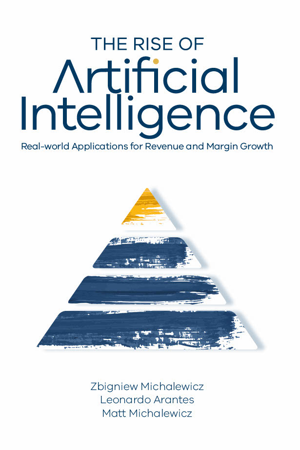
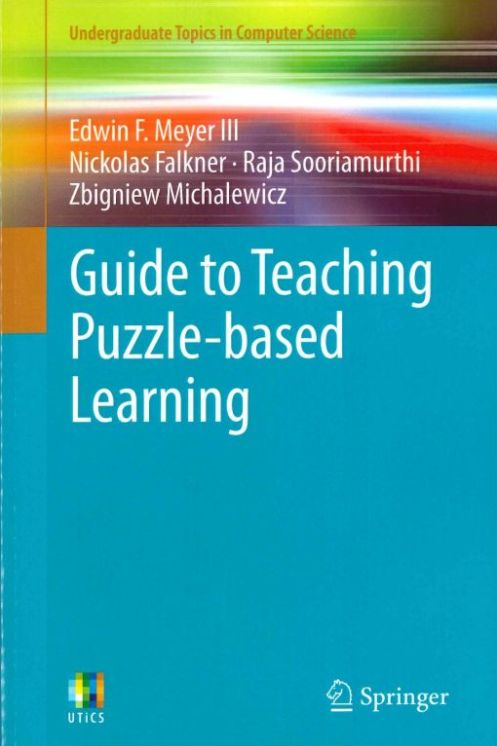
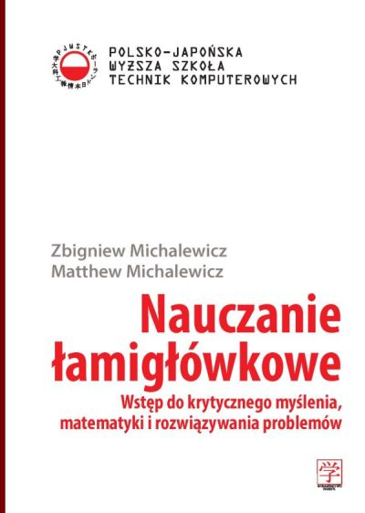
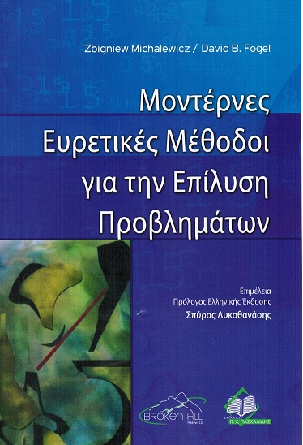
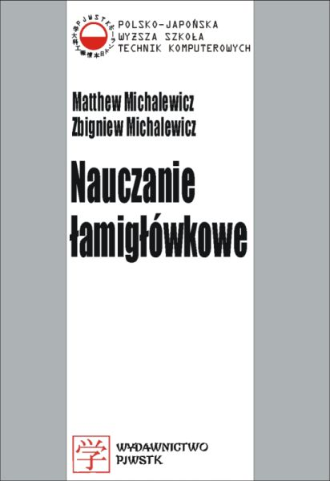
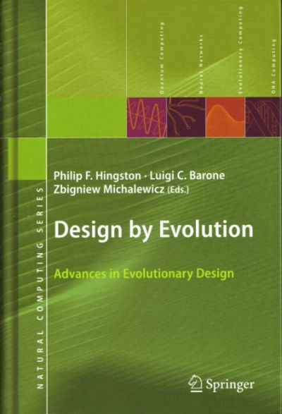
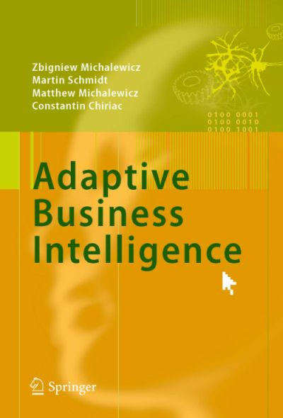
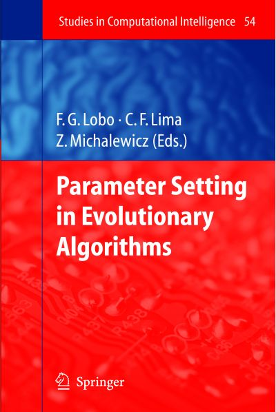
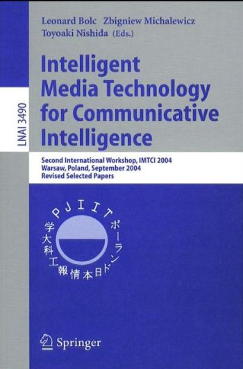
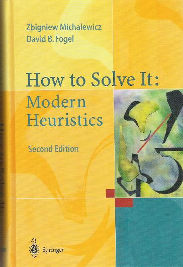
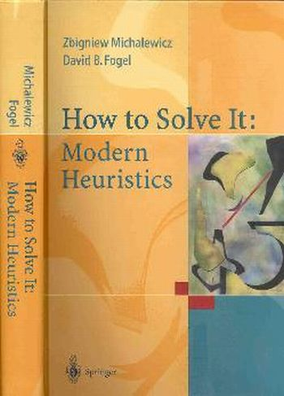
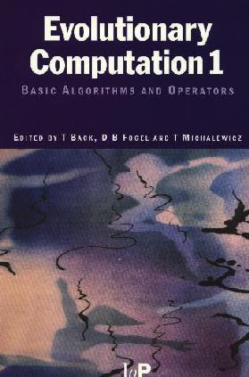
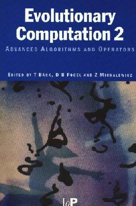
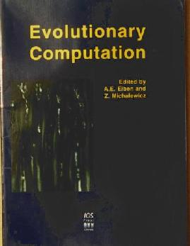
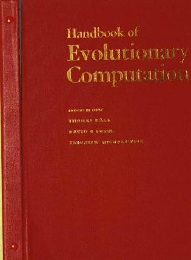
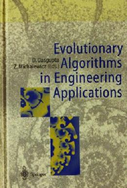
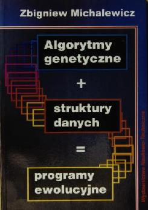
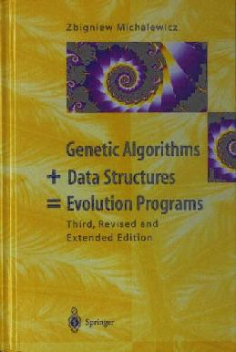
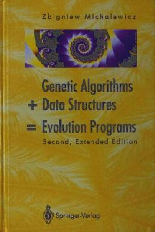
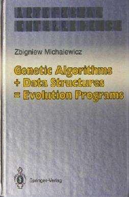
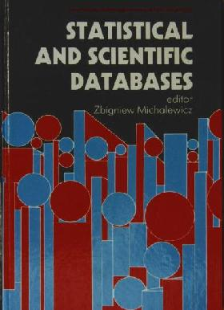
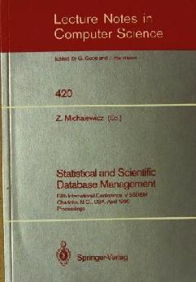
For a complete list of 250+ publications see the full papers page, the full CV, or Google Scholar.
Co-founder and Chief Scientist. A leading provider of Artificial Intelligence software helping large organisations sell more products, improve margins, and make better decisions through automated analytics and decision intelligence.
Co-founder and Chief Scientific Officer. Grew the supply-chain optimisation business from zero to ~180 employees and $20M in annual revenue. Ranked 3rd fastest-growing company in Australia (Deloitte, 2012). Acquired by Schneider Electric. Customers included Rio Tinto, BHP Billiton, and Xstrata.
Secured multi-million dollar contracts from General Motors, Ford Motor Company, Bank of America, U.S. Department of Defense, AirLiquide, PKN Orlen, BB&T, and Dentsu, applying computational intelligence to complex real-world problems.
Co-creator of the Puzzle-Based Learning educational methodology — a globally adopted approach to teaching critical thinking, mathematics, and problem solving. Adopted at hundreds of universities worldwide.
A lifelong passion — visited dozens of countries across every continent. Below are a few highlights; the full gallery covers years from 1986.




Zbigniew's wife — a talented fine-art painter based in Adelaide.
Zbigniew's son — entrepreneur, co-founder of SolveIT Software and Complexica, and author of Life in Half a Second.
Zbigniew's daughter-in-law — a professional photographer based in Adelaide.